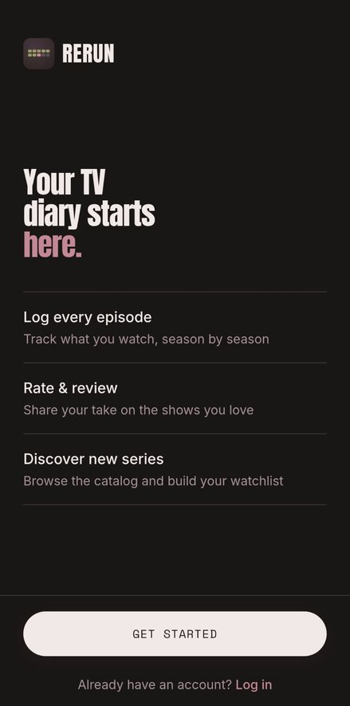
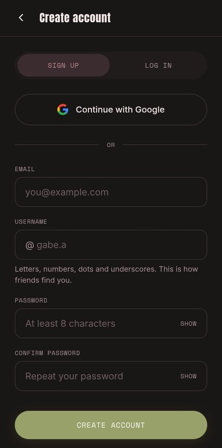
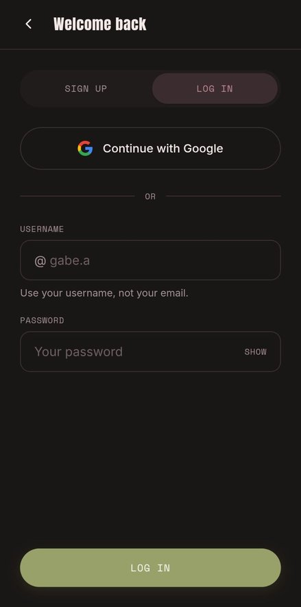
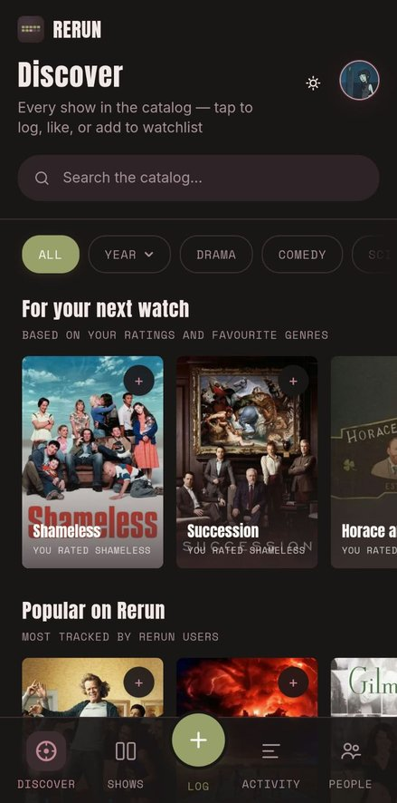
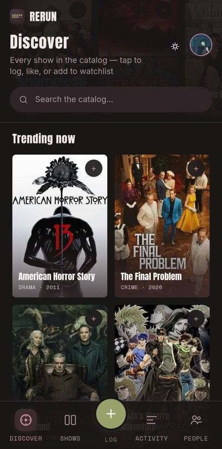
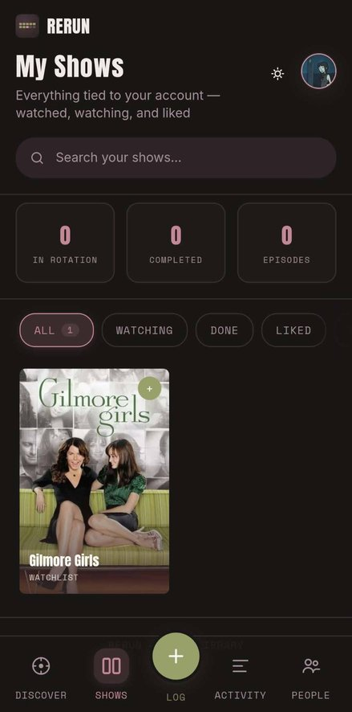
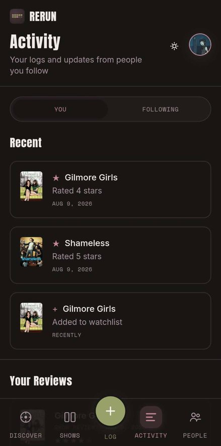
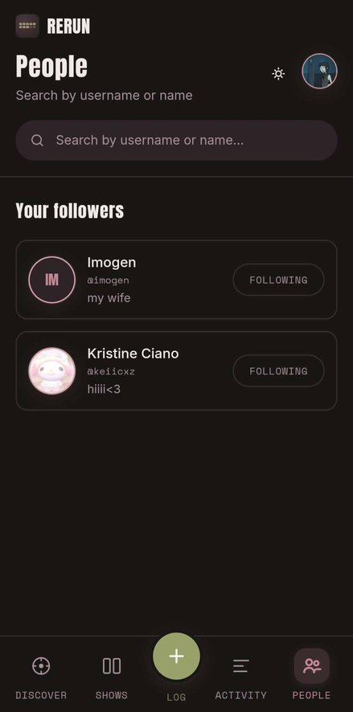
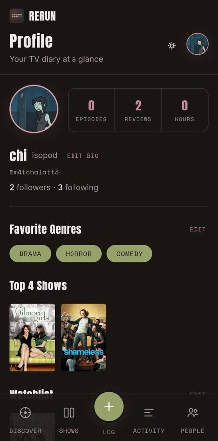
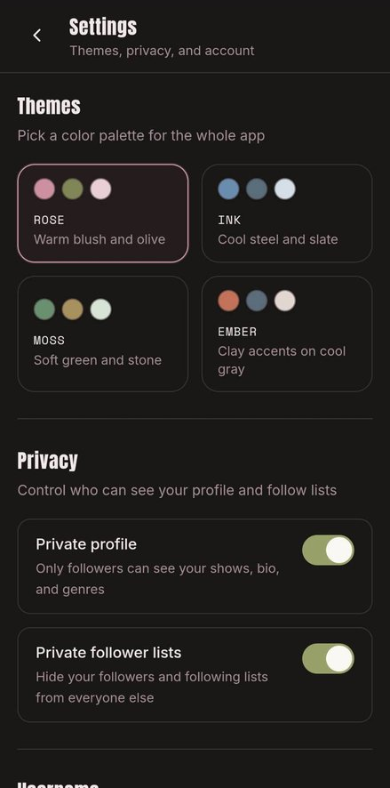

TV diary · Android
A well-kept notebook for television.
It's literally like Letterboxd.
Free, with no ads. Some features may become paid later.
Screenshots

Welcome 
Sign up 
Log in 
Discover 
Trending 
My Shows 
Activity 
People 
Profile 
Settings
Features
-
Log episodes
Tap + on any screen, pick a show you're watching, and log the episode.
-
Rate and review
Give a show stars and write a review. Your ratings show up in your activity.
-
Find shows
Search the catalog and filter by year or genre. Like a show or add it to your watchlist from its poster.
-
Follow friends
Search people by username and see what they rated or added to their watchlist.
-
Your profile
Show your top shows and favorite genres, with counts for episodes, reviews and hours.
-
Themes and privacy
Pick from four color themes. Make your profile or your follower lists private.
Install
- 01
Download Rerun.apk on your Android phone.
- 02
Open the file. Android may ask you to allow installs from your browser or files app. Say yes.
- 03
Tap Install, open Rerun, and sign up or log in.
Rerun isn't on Google Play yet. I haven't been able to cover the Play Store developer fee, but I plan to publish it there soon. Until then, Android will warn you about installing from an unknown source. It needs a connection the first time. After that, what you've opened stays available offline, but changes can't be saved.
Using an iPhone?
Rerun's app is Android only, and an APK file can't be installed on an iPhone. You can still use Rerun in Safari and add it to your home screen:
- Open rerun-diary.vercel.app in Safari.
- Tap the Share button, then Add to Home Screen.
- Tap Add. Rerun now opens from an icon on your home screen.
Why no iPhone app? Apple doesn't let you install app files directly. iPhone apps go through the App Store or TestFlight, and building one takes a Mac and Apple's paid developer program ($99 a year). Rerun is Android only for now.
Rerun started as an idea I had for a friend.. "What if there's an app like Letterboxd, but for TV Shows?" Then I started building.
I kept the design quiet, with posters and titles up front and the controls out of the way.
Built with
- Frontend
- Next.js
- React
- TypeScript
- Tailwind CSS
- Backend
- Supabase
- Mobile
- Capacitor
- Android